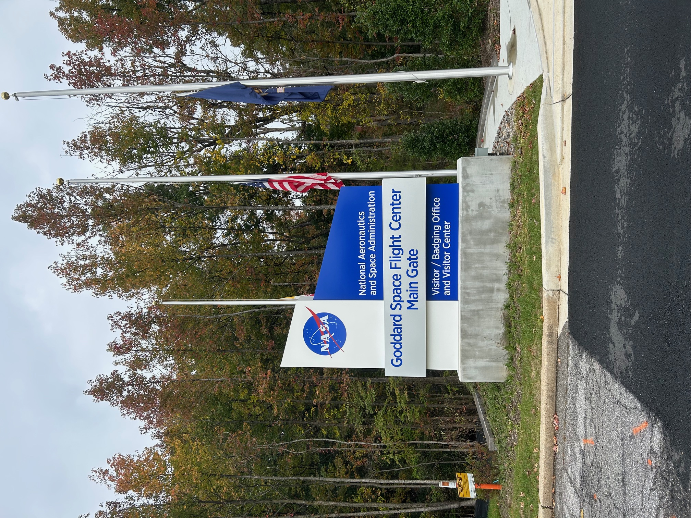
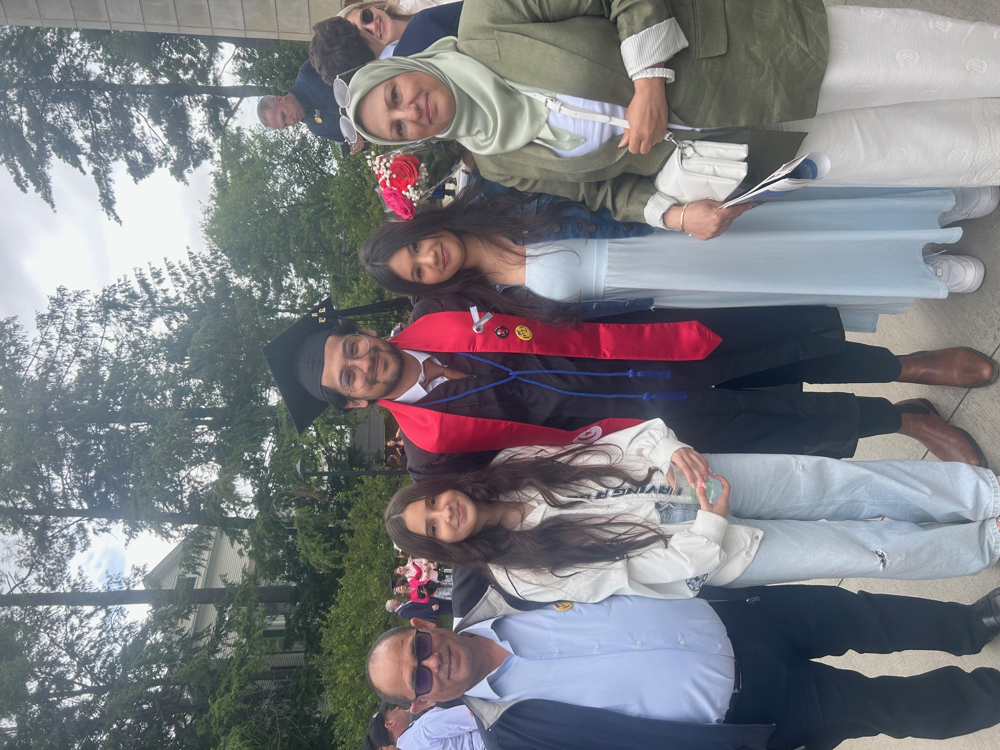
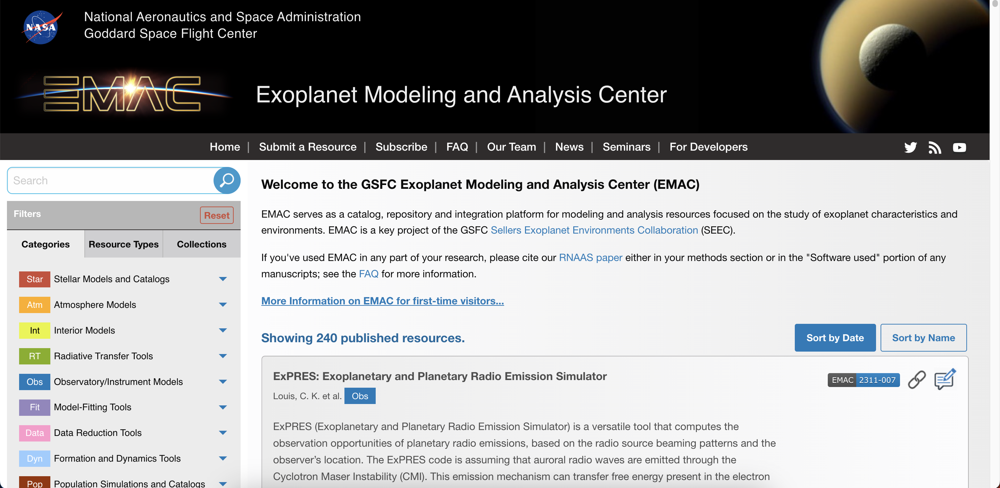
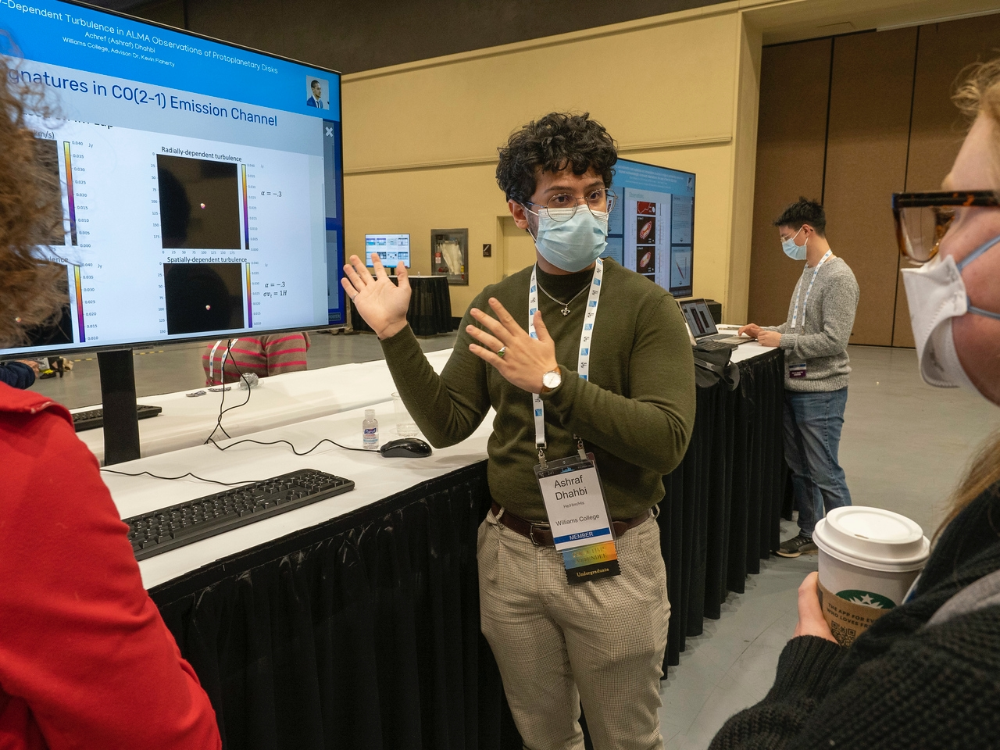

My name is Ashraf Dhahbi. I'm from Tunisia, but I am currently based in Maryland!
I'm a post-baccalaureate exoplanet researcher with experience in modeling, fitting and visualizing protoplanetary disks and
exoplanet atmospheres. I'm also the Astrophysics Department Lead at the Tunisian Space Association, working on making astronomy a
more accessible field in Tunisia. My goal is to expand our understanding of planetary habitability and formation, and increase
accessibility to the field in both Tunisia and the U.S.!
What have I been up to?

Now @NASA GSFC
I am currently a SURA/CRESST Post-baccalaureate Researcher at the NASA Goddard Space Flight Center.
My work here involves two projects. I am on the science team for the Exoplanet Modeling and Analysis Center (EMAC),
and I work with Dr. Avi Mandell on an exoplanet spectroscopy science project. More details on both projects are below!
It's so exciting to be part of the collaborative research environment at Goddard!
Just graduated!
I graduated from Williams College this past June Magna Cum Laude with a double major in Astrophysics and Mathematics!
I was inducted into Phi Beta Kappa and Sigma Xi, and I received the Milham Prize in Astronomy. Senior year was a little crazy
(finding a job isn't very easy for an international student in this economy), but that didn't stop me from doing lots of fun stuff!
I wrote an astrophysics honors thesis titled Looking into Spatially-Dependent Turbulence in ALMA
Observations of Protoplanetary Disks (more details below). And I also did a lot of dancing with the Asian Dance Troupe!

Research & Projects
Exoplanet Spectroscopy
Planetary habitability is one of the most interesting questions in exoplanet science and astronomy, perhaps due to its
philosophical/existential implications. A problem we face in our quest to answer this question, however, is that terrestrial planets
in the habitable zones of their host stars are often so close to the star that we cannot spatially resolve them from each other.
Transit spectroscopy uses eclipses and secondary transits in these systems to learn about the star and the planet, but one area
that we are still working on is understanding the variability of the host stars in order to distinguish between spectral features
stemming from stellar variability and those inherent to the planet that we are studying.
Advised by Dr. Avi Mandell, I am working on fitting variable star models to nearby M and K stars to gain some insight on how faculae and
dark spots influence their spectra. For this purpose, I have contributed to the grid interpolation package GridPolator and the model
fitting package piefitter, both of which are hosted on the VSPEC-collab github page.
Exoplanet Modeling and Analysis Center
The reproducibility of scientific results has been at the core of the Scientific Methodology since its birth with Ibn Al-Haytham.
A thousand years later, the scientific community faces a “Replication Crisis” as the research arena grows more competitive and scientists
more reluctant to share the details of their methods. With the goal of adapting the principles of Open Science to exoplanetology as well as
making the field more accessible to early career scientists, EMAC emerged as a catalog and repository for resources relevant to exoplanet
science. The website provides a platform for researchers to publicize their tools, making them available to the wider community who can in
turn provide feedback to help with their development.
As part of the EMAC science support team, my main task is curating and contacting developers to add exoplanet software
to our catalog. I also recently finished a project to automate and streamline the contact system to facilitate reaching out to
developers within the community and increase the site’s scalability.


Spatially-Dependent Turbulence in Protoplanetary Disks
ALMA (the Atacama Large Millimeter/submillimeter Array), with its unprecedented observational data on planetary systems, has raised
the ceiling of research into exoplanets and their formation processes. ALMA observations of CO emission in the protoplanetary disks
around DM Tau and IM Lup, showed that the gas had a non-Keplerian velocity component, which we dubbed turbulence.
Building on the previous detections, which assumed a constant turbulent velocity throughout the disk, I worked with Dr. Kevin Flaherty
to develop simple parametric models of the CO emission for a disk with turbulence that varies with height and radius. Our models of spatially-
varying turbulence are guided by theoretical simulations of Magneto-Rotational and hydro-dynamic instabilities, which predict that the turbulent
motion varies throughout the disk. We present preliminary results in applying these models to the disk around IM Lup, in which significant non-
Keplerian motion has been measured, and examine observational signatures of turbulence that varies with height and/or radius in the disk, as seen
in ALMA observations of CO/13CO/C18O line emission.